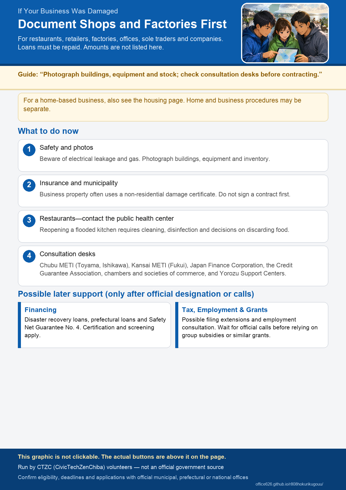

For Affected Businesses
This guidance is for restaurants, retailers, factories, offices, and others whose business facilities or equipment were damaged. It is volunteer-run and is not an application office. Check official sources for eligibility, periods, and application opening dates. This site does not list monetary amounts. Each administering organization makes the final eligibility decision.
Who This Page Is For
This page is for shop operators and for factories, warehouses, and offices. It covers both sole proprietors and corporations.
- If part of your home is used as a shop or workshop, also read If Your Home Was Damaged. Housing and business damage may require different certificates.
- This site does not maintain a list of individual shops that have reopened. Check official information from the public health center, municipality, and each shop.
What to Do Right Now
Document the damage and confirm safety before cleanup or signing a repair contract. Do not send your photos to this website.
- Do not enter dangerous areas. Watch for electrical leakage, gas, mud under floors, and falling ceilings. Follow official instructions from electricity and gas providers.
- Take photos that clearly show the damage. Record the building exterior, flood height, equipment, inventory, and vehicles. Take both wide shots and close-ups, and preserve the date.
- Contact your insurer or mutual aid provider. Flood coverage under fire insurance, comprehensive shop insurance, vehicle insurance, and Small Enterprise Mutual Aid all have different contact points.
- Read guidance from the municipal commerce department and about certificates. In many municipalities, business property requires proof of damage or a damage report rather than a residential disaster damage certificate. If you contract and pay for work first, you may later be ineligible for public assistance.
- Restaurants and food manufacturers should contact the public health center. A flooded kitchen requires decisions about cleaning, disinfection, and food disposal. Consult the public health center with jurisdiction before reopening.
- Preventing infection in flooded buildings (Ministry of Health, Labour and Welfare; work precautions) Government
- Rikuden (Hokuriku Electric Power) outage information Official
- Official electricity, gas, water, and road links on this site
- Find municipal application guidance on this site
Certificates for Homes and Businesses
Names vary by municipality. Apply to the municipality where the business is located.
- For a home used as your primary residence, a residential disaster damage certificate is often the main document.
- For shops, factories, garages, and business equipment, proof of damage or a damage report is often used. Ask the contact point which document your lender, guarantor, insurer, or other recipient requires.
- Even in the same building, the residential and shop areas may require separate procedures.
Official Consultation Services Available Now
National government regional offices have established special consultation services for the heavy rain beginning 27 August 2026. Check each link for the latest covered municipalities and measures.
- Chubu Bureau of Economy, Trade and Industry: Disaster Information (covers Toyama and Ishikawa; includes the special consultation service for this heavy rain) Government
- Kansai Bureau of Economy, Trade and Industry (covers Fukui) Government
- Small and Medium Enterprise Agency: Disaster Information Government
- Organization for Small & Medium Enterprises and Regional Innovation, Japan (SME Support Japan) (check announcements on special consultation and disaster loans for Small Enterprise Mutual Aid members) Government
- Online business consultation, E-SODAN (SME Support Japan) Government
Prefectural programs now running
Municipal Contact Points for Businesses
Support That May Become Available
The Disaster Relief Act mainly covers emergency housing and daily life. Separate financing, guarantee, tax, and employment programs may be activated for businesses. This does not mean that assistance is guaranteed. Many programs can be used only after an official designation, call for applications, or certification.
- Cash-flow consultation: Japan Finance Corporation disaster recovery loans, Shoko Chukin Bank, prefectural financing, and credit guarantees are possible sources. Financial institutions conduct screening.
- Guarantees requiring municipal certification: Safety Net Guarantee No. 4 for natural disasters generally requires national designation of the area followed by certification from the municipality where the head office is located. Check the Small and Medium Enterprise Agency and municipality for designation status.
- Loans for mutual aid members: Small Enterprise Mutual Aid members may be offered disaster loans in areas covered by the Disaster Relief Act. Check announcements from SME Support Japan.
- Tax filing and payment deadlines: There may be a broad regional extension or a need to apply individually to the tax office. Do not assume the deadline has automatically been extended.
- Employment: If closure or commuting difficulties continue, ask the Labour Bureau or Hello Work about employment insurance and the Employment Adjustment Subsidy. Check official sources for any special measures.
- Facility restoration grants: Programs commonly called group subsidies often begin only after an extreme-disaster designation and national or prefectural call for applications. This site does not state that such a grant will be provided now. Check the regional economy bureau and SME Agency disaster pages regularly.
- Disaster Recovery Loans (Japan Finance Corporation) Official
- Shoko Chukin Bank Official
- Safety Net Guarantee No. 4 (Small and Medium Enterprise Agency) Government
- Overview of Safety Net Guarantees (Small and Medium Enterprise Agency) Government
- Extensions of tax filing and payment deadlines after disasters (National Tax Agency) Government
- National Tax Agency disaster information Government
- Employment Adjustment Subsidy (Ministry of Health, Labour and Welfare; check for special measures) Government
Special Checks for Restaurants and Factories
- Food service and manufacturing: Ishikawa, Toyama and Fukui says food touched by contaminated water, and refrigerated or frozen food that could not be temperature-controlled during an outage, should generally be discarded. Check well-water quality, and consult the public health center with jurisdiction before reopening.
- Factories and warehouses: Follow the equipment manufacturer or electrical safety inspector before energizing machinery. See municipal disaster-waste guidance for disposal of industrial waste.
- Agriculture and fisheries: Check the Japan Finance Corporation Agriculture, Forestry, Fisheries and Food Business Unit and the Ishikawa, Toyama and Fukui Agriculture, Forestry and Fisheries Department. This page mainly covers commerce and industry.
- Japan Finance Corporation Agriculture, Forestry, Fisheries and Food Business Unit Official
- Disaster waste information (Ministry of the Environment; see municipal sources for disposal instructions) Government
Important Precautions
- Repairing first may make you ineligible for later assistance. Wanting to reopen quickly is understandable. If you hope to use public funds, it is safer to document the damage and confirm that official applications are open before proceeding.
- Watch for disaster-related scams. Consult a consumer affairs center about contractors who pressure you to sign or insist that a subsidy will make the work free.
- Financing means debt. Guarantees and loans must be repaid. Confirm the terms with the provider.
- Municipal commerce departments may publish more guidance later. Recheck the municipality search under “For Ishikawa, Toyama and Fukui Residents” and each official source.
- You may be able to request a re-inspection if you disagree with the assessment. The level of damage is decided by an on-site inspection. If the result does not match what you saw, ask your municipal office whether you can request a re-inspection. Some municipalities set a deadline.
- Insurance and mutual aid claims have deadlines. They differ by contract, so once your photographs are in order, confirm the deadline with your provider.
- Beware of dishonest sales practices exploiting disasters (Consumer Affairs Agency) Government
If your home was damaged / Travel and daily life
